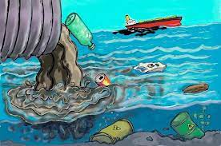

Цель Исследования является проблемы экологии.
Исследование проблем экологии

Загрязнение Мирового океана
Описание проблемы:Проблема загрязнения Мирового океана связана с тем, что основ-ная часть отходов производства так или иначе оказывается в океанских водах. Это объясняется в первую очередь тем, что сброс от- ходов проще всего реализуется в водную среду–реки и водое-мы, после чего происходит их вынос в моря и океаны. В основном данные отходы появляются в результате производства пластмасс, нефти, средств химической обработки (в частности, в результатепроизводства пестицидов).
Описание решения:Осознание существующих проблем привело в первую очередь к увеличению прикладных исследований, в частности к разработке методов контроля за состоянием Мирового океана. На основании его данных принимаются решения о правильности использования ресурсов Мирового океана и корректируются действия по охране его вод.
Глобальное потепление
Описание проблемы:К настоящему времени метеослужбы в различных регионах земно- го шара имеют более чем вековую историю. Сравнительные данныеза различные периоды времени позволяют сделать вывод об измене- нии климата на планете.
Описание решения:Начиная с 1850 года, в десятилетнем масштабе температура воздуха в каждое десятилетие была выше, чем в любое предшествующее десятилетие. С 1750—1800 годов человек ответствен за повышение средней глобальной температуры на 0,8—1,2 °C. Вероятная величина дальнейшего роста температуры на протяжении XXI века на основе климатических моделей составляет 0,3—1,7 °C для минимального сценария эмиссии парниковых газов, 2,6—4,8 °C — для сценария максимальной эмиссии.
Утилизация твердых отходов
Описание проблемы:Бытовой мусор – это проблема всех народов и всего мира в целом, пришла к нам с появлением человека. В настоящее время она является одной из наиболее серьезных экологических проблем в разных странах - Например: за год от одного жителя России образуется около 400 кг бытовых твердых отходов. А эффективных способов утилизации неорганики пока еще не придумано. Все дело в том, что некоторые виды отходов не поддаются гниению и потому их бесполезно закапывать в землю, их нужно утилизировать.
Описание решения:Оптимальным вариантом для решения этой проблемы является рециклинг – это возврат в промышленное производство многих материалов, которые содержатся в отходах промышленности, строительства и бытовой сферы. Один из оптимальных способов решения проблемы с утильсырьем, но его выполнение осложняется в нашей стране отсутствием раздельного сбора мусора.
Выводы
Анализ упомянутых проблем и связанных с ними научных исследований позволяет разделить данные проблемы на две большие категории. Первая категория включает в себя проблемы, которые возникают при общем использовании ресурсов Земли и которые обусловлены тем, что разные государства не могут обеспечить хозяйственное обо- собление страны из-за единой среды обитания (общие атмосфера, Мировой океан).
Ко второй категории относятся проблемы, которые могут решать- ся обособленно каждым государством. На примере проблемы пере- работки твердых бытовых отходов видно, что существуют пути ре- шения проблем, приводящие, помимо ожидаемого результата, и к получению экономической выгоды. Решение проблем этой категории облегчается тем, что на своей территории государство может полно- стью контролировать процесс их преодоления. В свою очередь, их решение приведет к минимизации проблем первой категории, по- скольку будет уменьшаться отрицательный эффект, который сказы- вается на среде обитания населения не только конкретной местности, но и, как следствие, всей Земли.